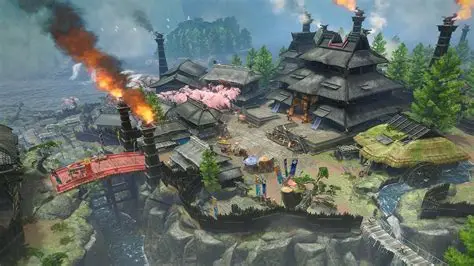
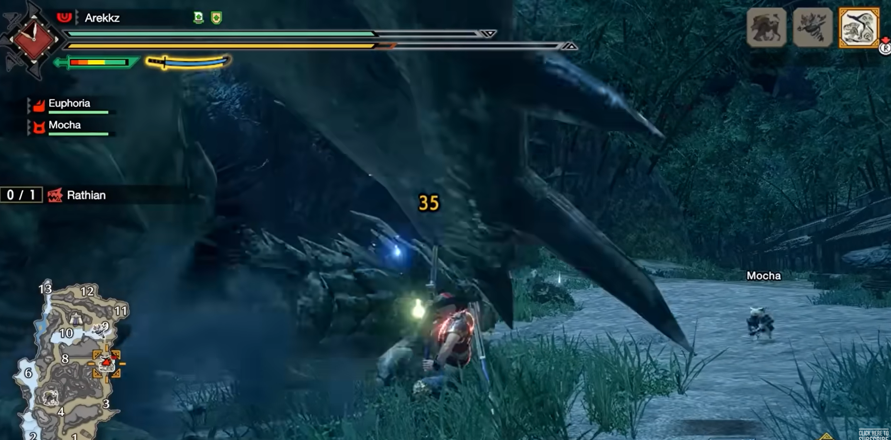
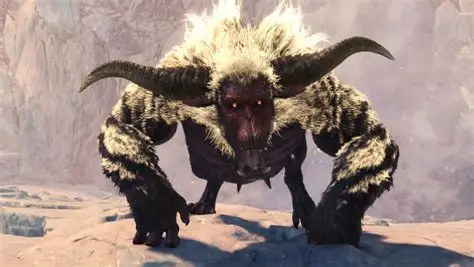
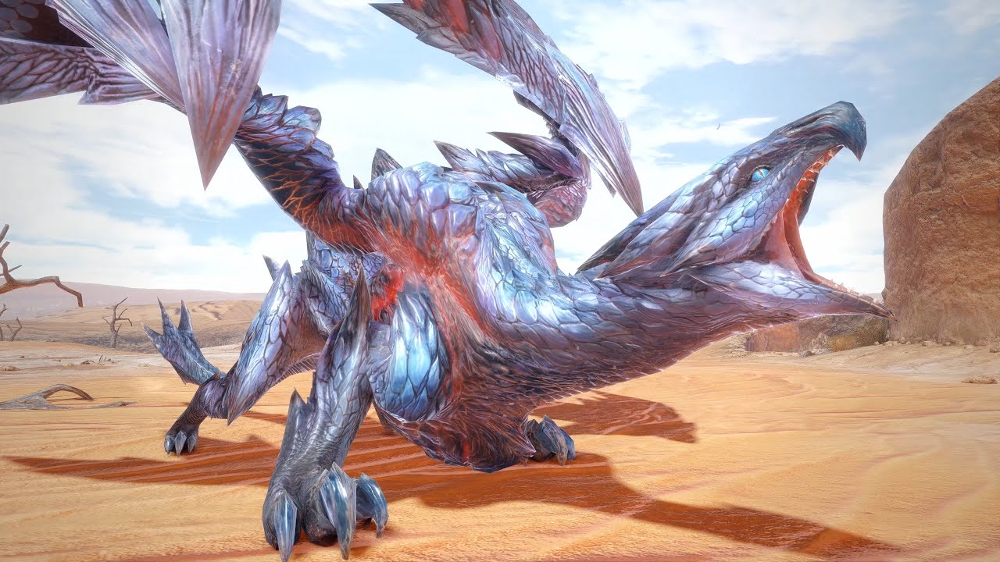

Bienvenue sur le wiki Monster Hunter où vous apprendrez à vous familiariser avec le jeu
Monster Hunter Rise est un des succès de Capcom, c'est un jeu de combat de boss et de chasse en temps limité.
Dans ce jeu, vous incarnez un chasseur dans la ville de Kamura. Cette dernière est un véritable bastion de chasseurs d'élite. C'est là-bas que vous faites vos marques et que vos premières missions vous sont attribuées.
Katana Moveset
Le katana, aussi appelé Katanoob, est l'une des armes les plus puissantes du jeu. Elle présente un moveset très complet. Pour apprendre à la jouer, il faut comprendre le système de jauge et de counter, mais aussi comprendre à combiner certains mouvements en utilisant les filoptères. Le katana dispose de plus d'attaques intéressantes, notamment l'attaque Sakura avec L2 + Triangle, qui est l'une des attaques les plus fortes du jeu car c'est une attaque multi-hit qui fait énormément de dégâts. Mais sa force réside dans le fait qu'elle augmente la jauge du katana si l'attaque touche l'ennemi.

Comme vous pouvez le voir ci-dessus, la jauge est ce qui se trouve en haut à gauche. C'est l'une des composantes les plus essentielles du katana, car plus la jauge augmente, plus les attaques sont puissantes. Dans l'extension Sunbreak, le rouge est même nécessaire pour pouvoir faire le rengainage éclair en mouvement, qui est le counter le plus stylé de tout le jeu.
Erreurs à ne pas faire avec le katana
Voici quelques erreurs à ne pas faire avec le katana :
- Rester devant le boss ou être trop distant avec lui. Avec le katana, il ne faut pas hésiter une seule seconde à être en dessous du boss. La plupart des dragons ou créatures n'ont pas de move pour se protéger des attaques venues d'en bas. De plus, en équipe, le rôle du joueur katana est de couper la queue du boss, car il a l'arme parfaite pour, et d'être constamment agressif.
- Utiliser massivement les counters et être patient. Si faire des dégâts est une priorité, frapper son ennemi de manière aléatoire est une erreur immense. Monster Hunter reste un jeu de rythme, il faut apprendre à lire les boss, donc il faut être très patient, utiliser le rengainage éclair R2 + Croix et le libérer quelques frames avant l'attaque du boss avec R2. Et aussi utiliser massivement R2 + Rond, qui est une esquive en arrière qui permet d'enchaîner sur un combo et d'augmenter la couleur de sa jauge par la même occasion.
- Ne pas faire de combo si sa jauge est vide ou pas remplie. Cela annule juste le combo et fait que vous allez faire peu de dégâts, en plus de remettre votre jauge à zéro si elle était partiellement remplie. R2 doit être utilisé uniquement en cas de full combo.
- Aiguisez ! Aiguisez ! Et aiguisez votre arme ! Le katana est l'une des armes qui s'émousse le plus rapidement. Une fois le tranchant dans le jaune ou l'orange, l'arme ne fait presque plus de dégâts. Alors penser à aiguiser son arme est indispensable.
Combats et boss
Le jeu a de nombreux boss à affronter, chacun avec ses propres patterns d'attaque et ses faiblesses. Il existe un bestiaire dans le jeu qu'il ne faut pas hésiter à lire pour comprendre les faiblesses d'un boss. Certains boss ont des parties beaucoup plus vulnérables, alors que d'autres sont au contraire extrêmement durs et font vaciller l'arme à chaque coup.


Prenez par exemple ces deux boss, le Valstraax et le Raajang, qui sont deux des boss les plus durs hors extension. Le Valstraax, par exemple, a un des patterns les plus fous du jeu, notamment sa version en quête événement, qui est le boss final du jeu dans la version de base du jeu. Voilà les erreurs à ne pas commettre contre lui :
- Il a un laser ultra puissant qu'il fait souvent. Celui-ci est extrêmement dangereux, il one-shot. C'est pour ça que vous devez toujours vous poser de côté face à lui. Si vous êtes juste en face, les chances que vous mouriez sont très hautes, car l'attaque vous enferme dans ses ailes et vous one-shot.
- Il a aussi un coup d'aile qui ressemble à un coup d'estoc. Celle-ci enlève toute votre barre de vie, est extrêmement rapide et dangereuse. Voilà pourquoi vous ne devez jamais vous tenir à mi-distance face à lui. Soyez soit juste en dessous, soit très loin au maximum.
- À un moment, il se transforme. Cette transformation est accompagnée d'une animation où il est entouré d'une aura et absorbe de l'énergie. À ce moment-là, il est immobile. ET VOUS DEVEZ ABSOLUMENT ÊTRE DEVANT LUI À CE MOMENT-LÀ POUR ÉVITER QU'IL SE TRANSFORME. VOILÀ POURQUOI IL EST ESSENTIEL DE RESTER EN DESSOUS DE LUI, TRÈS PROCHE, ET DE NE PAS HÉSITER À FAIRE UNE ROULADE DÈS QU'IL ESSAYE DE SE TRANSFORMER ET IMMÉDIATEMENT FRAPPER SON TORSE, CAR SI VOUS NE FRAPPEZ PAS SON TORSE, IL SE TRANSFORME ET AUGMENTE SA PUISSANCE PAR QUASIMENT 2.
- Il a aussi une attaque où il fonce extrêmement rapidement de manière aléatoire sur vous comme une fusée. Le plus important est de gérer sa rechute. Gardez toujours un filoptère de disponible et faites L2 + Croix pour pouvoir rapidement revenir dans la bataille. Dans ces séquences-là, il est aussi très important de gérer son tilt et de ne pas rager, car vous prendrez cette attaque de très nombreuses fois.
Les afflictions et talents
Maintenant, l'une des composantes les plus importantes du jeu sont les talents. Les deux talents les plus puissants de tout le jeu pour le katana sont le rengainage éclair, qui crée quasiment un nouveau move tellement vos rengainages s'intègrent beaucoup plus naturellement en combat. Vous rengainez beaucoup plus rapidement et pouvez faire vos counters beaucoup plus rapidement et efficacement. ET LE TALENT LE PLUS FORT DU JEU : Evade Extender, qui permet de faire des roulades beaucoup plus rapides et longues. Cela permet de fuir rapidement un boss et de se replacer très rapidement. C'est un must-have pour un joueur katana. Vous vous sauvez de nombreuses situations normalement mortelles grâce à ce talent.
Les afflictions sont aussi extrêmement importantes dans le jeu, car elles rajoutent des dégâts élémentaires ou des effets vraiment intéressants. Voilà les différentes afflictions :
- Le feu, qui rajoute des dégâts élémentaires.
- Le dragon, qui est une affliction très particulière, très efficace contre les dragons anciens (Kushala Daora, Valstraax, Teostra).
- Le sommeil, qui, avec une certaine quantité de dégâts, fait dormir le monstre et permet de charger une attaque sur lui une fois endormi, qui le réveillera proprement...
- Le poison, qui fait perdre de la vie progressivement.
- La glace, qui touche à l'endurance du monstre et le fatigue beaucoup plus rapidement.
- La foudre, qui fait des dégâts élémentaires.
- La paralysie, qui rend le monstre immobile une fois qu'il a été assez frappé.
- Le fléau explosion, qui est extrêmement fort et que vous pouvez avoir grâce au Magnamalo. Une fois une certaine quantité de DPS atteinte, le boss subit une explosion à l'attaque d'après, qui fait un gros DPS d'un coup.
- Et enfin l'eau, que j'ai très peu utilisée, mais qui fait des dégâts élémentaires.
Plus de contenu en vidéo
Voilà des vidéos de la Team Darkside, qui est extrêmement forte au jeu, pour y voir plus clair et pour des conseils avancés sur le jeu :